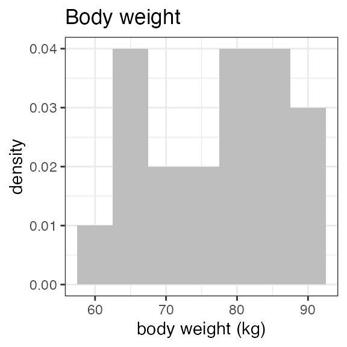
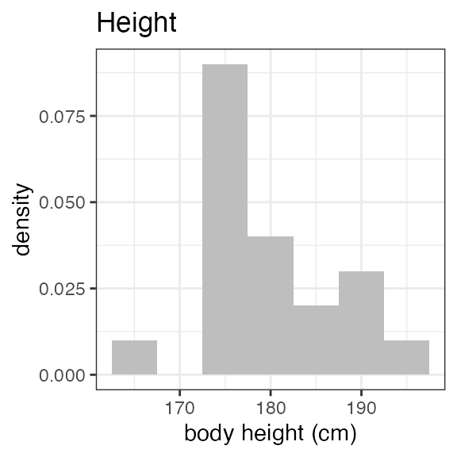
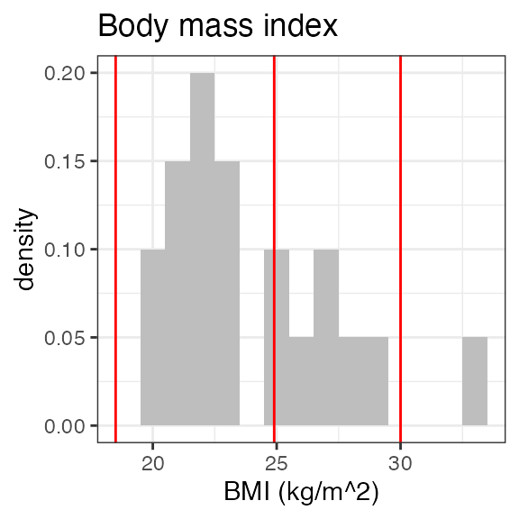
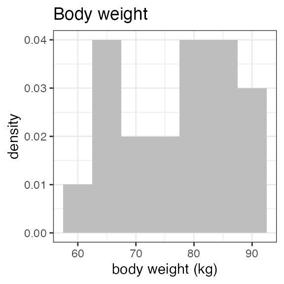
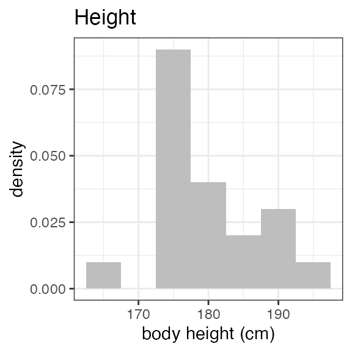
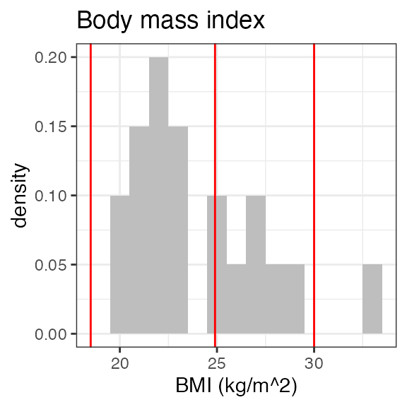
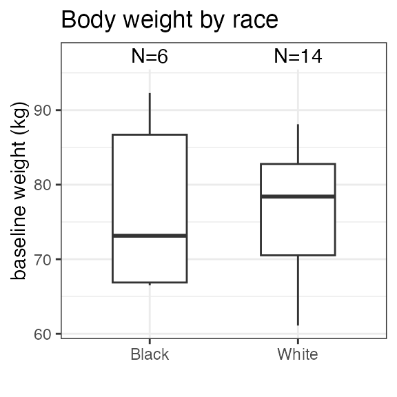
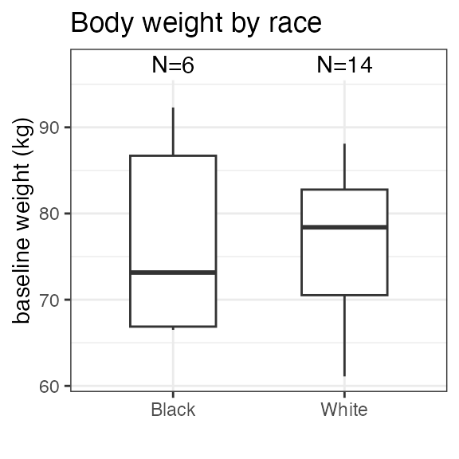
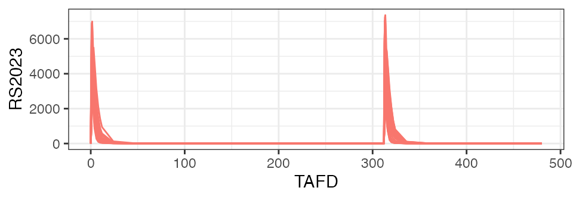

INTRODUCTION
This is a basic tutorial on using the nif package to
create NONMEM Input File (NIF) data sets from Study Data Tabulation
Model- (SDTM) formatted data.
Background
Following current regulatory standards, clinical study data are commonly provided in SDTM format, an observation-based data tabulation format in which logically related observations are organized into topical collections (domains). SDTM is defined and maintained by the Clinical Data Interchange Standards Consortium (CDISC).
For many exploratory analyses, data from different SDTM domains need to be combined. For example, demographic and pharmacokinetic concentration data from the DM and PC domains are both needed to evaluate exposure by age. More complex analyses like population-level PK and PK/PD analyses may include further data, e.g., clinical laboratory, vital sign, or biomarker data.
NONMEM and other commonly used modeling software packages expect the input data integrated into a (long) data table format with strict requirements to the formatting and nomenclature of the variables (see, e.g., Bauer, CPT Pharmacometrics Syst. Pharmacol. (2019) for an introduction). The input data file for these analyses is often casually referred to as a ‘NONMEM input file’ or ‘NIF file’, hence the name of this package.
Depending on the nature of the analysis, some of the input variables, may be easily and automatically derived from the SDTM-formatted source data, e.g., ‘DOSE’ or ‘DV’ (the dependent variable for pharmacokinetic observations), or demographic covariates like AGE, SEX or RACE.
Other fields of the input data set may require study-specific considerations, for example the calculation of baseline renal or hepatic function categories, definition of specific treatment conditions by study arm, or the encoding of adverse events or concomitant medications of interest as categorical covariates.
In contrast to the latter variables which often need manual and study-specific data programming, the core NIF data set that integrates pharmacokinetic observations, drug administration information and a standard set of baseline covariates can often be generated automatically without too much study-specific user input. It should be however noted that even for such basic NIF files, missing data points and certain inconsistencies may need to be resolved to get to an analysis-ready data set, particularly so if the SDTM data stems from an ongoing clinical study and has not been fully cleaned yet. More on this point later.
This package is intended to facilitate the creation of analysis data sets (‘NIF data sets’) from SDTM-formatted clinical data. In addition, it includes a set of functions and tools to explore SDTM and NIF data sets.
The first part of this tutorial describes how to import SDTM data
into a sdtm object, and how to explore clinical data on the
SDTM level.
The second part of this tutorial walks through the generation of a sample NIF data set from SDTM data and its initial exploratory analysis.
This tutorial contains live code that depends on the following R packages:
SDTM DATA
Import SDTM data
As a minimum, the following SDTM domains are expected to create a basic NIF file:
- DM - demographic data, mostly age, sex and other variables per subject
- VS - vital signs, particularly weight and height at enrollment, per subject
- EX - exposure information for the administered drugs, e.g., the time of administration, dose, etc.
- PC - pharmacokinetic concentrations for the analytes associated with the administered drugs
In the most common use case, the respective SDTM data files, e.g., as
*.sas7bdat files, are copied into one folder (in the below example into
path/to/sdtm/data), and can then be loaded using:
read_sdtm("path/to/sdtm/data")Based on the above, the minimum required SDTM files are
dm.dat7bdat, vs.dat7bdat,
ex.dat7bdat and pc.dat7bdat. However, if
additional covariates from AE, LB or any other SDTM domain are to be
added, an explicit list of the domains can be provided to the loading
function, e.g.,
The return value of this function is a sdtm object.
SDTM objects
Sdtm objects are essentially lists of the SDTM domains
from a particular clinical study, plus some metadata. The easiest way of
creating sdtm objects is by importing the SDTM data using
read_sdtm_sas() or read_sdtm_xpt() as shown
above.
The nif package includes sample SDTM data sets for
demonstration purposes. These data do not come from actual clinical
studies but are fully synthetic data sets from a fictional single
ascending dose (SAD) study (examplinib_sad), a fictional
food effect (FE) study (examplinib_fe), and a fictional
single-arm proof-of-concept (POC) study with multiple-dose
administrations (examplinib_poc).
The original SDTM data can be retrieved from sdtm
objects by accessing the individual SDTM domains like demonstrated below
for the DM domain of the examplinib_fe data object:
examplinib_fe %>% domain("dm") %>% head(3)
## SITEID SUBJID ACTARM ACTARMCD RFICDTC RFSTDTC
## 1 102 1020001 Fed - Fasted BA 2000-12-21T10:29 2000-12-26T10:29
## 2 104 1040001 Fed - Fasted BA 2000-12-22T10:24 2000-12-28T10:24
## 3 102 1020002 Screen Failure SCRNFAIL 2000-12-22T09:18 <NA>
## RFXSTDTC STUDYID USUBJID SEX AGE AGEU COUNTRY DOMAIN
## 1 2000-12-26T10:29 2023000400 20230004001020001 M 22 YEARS DEU DM
## 2 2000-12-28T10:24 2023000400 20230004001040001 M 43 YEARS DEU DM
## 3 <NA> 2023000400 20230004001020002 M 55 YEARS DEU DM
## ARM ARMCD RACE ETHNIC RFENDTC
## 1 Fed - Fasted BA WHITE 2001-01-08T10:29
## 2 Fed - Fasted BA WHITE 2001-01-10T10:24
## 3 Screen Failure SCRNFAIL BLACK OR AFRICAN AMERICAN <NA>The most relevant domains, “dm”, “vs”, “ex” and “pc”, can also be accessed directly, e.g.:
dm <- examplinib_fe$dmPrinting an sdtm object shows some of its basic
properties:
examplinib_fe
## ──────── SDTM data set summary ────────
## Study 2023000400 with 20 subjects providing PC data.
##
## Subjects per domain:
## DOMAIN N
## dm 27
## vs 27
## ex 20
## pc 20
## lb 27
##
## Arms (DM):
## ACTARM ACTARMCD
## Fed - Fasted BA
## Screen Failure SCRNFAIL
## Fasted - Fed AB
##
## Treatments (EX):
## EXTRT
## EXAMPLINIB
##
## Specimens (PC):
## none
##
## Analytes (PC):
## PCTEST PCTESTCD
## RS2023 RS2023
## RS2023487A RS2023487A
##
## Treatment-to-analyte mappings:
## EXTRT PCTESTCD
## EXAMPLINIB RS2023
##
## Parent-to-metabolite mappings:
## none
##
## Time mappings:
## noneNote the ‘Treatment-to-analyte mappings’ and ‘Parent-to-metabolite mapping’ tables in the above output, we will get back to this when creating a NIF data set from these SDTM data.
In addition to a general overview, general demographic data for individual subjects (by their USUBJID) can be extracted as shown below:
examplinib_fe %>% subject_info("20230004001050001")
## [,1]
## SITEID 105
## SUBJID 1050001
## ACTARM Fasted - Fed
## ACTARMCD AB
## RFICDTC 2000-12-24T11:59
## RFSTDTC 2001-01-01T11:59
## RFXSTDTC 2001-01-01T11:59
## STUDYID 2023000400
## USUBJID 20230004001050001
## SEX M
## AGE 54
## AGEU YEARS
## COUNTRY DEU
## DOMAIN DM
## ARM Fasted - Fed
## ARMCD AB
## RACE WHITE
## ETHNIC
## RFENDTC 2001-01-14T11:59SDTM suggestions
SDTM data may be incomplete, e.g., when emerging data that have not yet been fully cleaned are analyzed. In addition, some study-specific data may be encoded in a non-standardized way, e.g., information on study parts, cohorts, treatment conditions, etc..
Such data fields may need study-specific considerations and manual
imputations during the creating of the NIF data set. To help deciding
which study-specific factors need to be addressed, the nif
package includes functions to explore the structure of SDTM data.
As a starting point, suggest() can provide useful
suggestions for manual imputations for a sdtm object:
suggest(examplinib_fe)
## 1. There are 3 arms defined in DM (see below).
## Consider defining a PART or ARM variable in the nif dataset,
## filtering for a particular arm, or defining a covariate based
## on ACTARMCD.
##
## ACTARM ACTARMCD
## Fed - Fasted BA
## Screen Failure SCRNFAIL
## Fasted - Fed AB
## 2. There are treatments (EXTRT) without analytes (PCTESTCD) of
## the same name (see below).
## Consider adding a treatment-analyte mapping to the sdtm object
## See '?add_analyte_mapping' for additional information.
##
## EXTRT
## EXAMPLINIB
##
## Available analytes:
##
## PCTESTCD
## RS2023
## RS2023487AIn the case of examplinib_fe, there are different
treatment arms defined in the DM domain that should probably be included
as covariates in the NIF file as they specify the sequence of fasted and
fed administrations (suggestion 1). A respective variable within the NIF
data set will be programmed once a basic NIF file has been generated
(see below).
Also, the SDTM data do not provide a relation between treatments and
analytes (suggestion 2). The parent drug name in the SDTM field
EXTRT (i.e., “EXAMPLINIB”) is different from the respective
analyte for the parent compound as specified in the field
PCTESTCD (i.e., “RS2023”). This is a common situation in
data from clinical studies.
To correctly associate pharmacokinetic concentrations with the administration of the corresponding drug, a link needs to be provided between the treament and the analyte. Similarly, metabolites (e.g., “RS2023487A”) need to be linked to their parent compound - particularly if muliple drugs and metabolites are included in the data set.
Analyte and metabolite mappings
To establish these relationships, treatment-analyte mappings must be
added to the sdtm object with
add_analyte_mapping(). In this sample case, the analyte
“RS2023” refers to the (parent) plasma concentration for the drug
“EXAMPLINIB.”
To establish the relationships betwen metabolites and their parent
copounds, add_metabolite_mapping() can be used. In the
sample data, the PCTESTCD of “RS2023487A” represents a
metabolite of “RS2023”:
sdtm_expl <- examplinib_fe %>%
add_analyte_mapping("EXAMPLINIB", "RS2023") %>%
add_metabolite_mapping("RS2023", "RS2023487A")NIF DATA SETS
Creating NIF data sets
The following section summarizes the steps to create a NIF file from
an sdtm object.
Basic NIF file
Most steps in the generation of a basic NIF file from an
sdtm object are automated in the make_nif()
function. The resulting nif object is a data table with
individual rows for individual administrations and observations and
follows the naming conventions summarized in Bauer, CPT Pharmacometrics
Syst. Pharmacol. (2019).
Standard demographic information including SEX, AGE, RACE is taken from the DM domain and merged into the data table. Baseline WEIGHT and HEIGHT are taken from the VS domain.
# nif_expl <- make_nif(sdtm_expl)
nif_expl <- new_nif() %>%
add_administration(sdtm_expl, "EXAMPLINIB", analyte = "RS2023") %>%
add_observation(sdtm_expl, "pc", "RS2023", cmt = 2)The output of the above code informs that there may be
pharmacokinetic data for multiple specimens in the PC domain, e.g.,
“PLASMA” and “URINE” or “FECES”. As no specimem was defined,
make_nif() takes what it considers the the most likely
(“PLASMA” in this case). Alternatively, the specimen of interest can be
explicitly provided (see ?make_nif() for details).
Also, a data cut-off was applied that reflects the date and time of
the last observation. This may be relevant in multiple-dose studies
where further administrations may be recorded after the last
oberservation. These administration events are excluded from the NIF
file. If this default behavior is not wanted, the
truncate_to_last_observation attribute to
make_nif() should be set to FALSE.
Study-specific covariates
In many clinical studies, participants are treated in subgroups or serial treatment periods, for example, dose escalation cohorts, cross-over periods with different formulations or co-administration of drug interaction perpetrators, etc.. While DOSE is automatically included as a continuous covariate, other categorical covariates may need to be derived, e.g., from the study arm (ARM) field.
This sample study is a food effect study in which participants
received the test drug, EXAMPLINIB, fasted or fed in a randomized
sequence (see ACTARM and ACTARMCD in the
output of suggest(), above). Another field for
consideration may be EPOCH:
nif_expl %>%
as.data.frame() %>%
distinct(EPOCH, ACTARMCD)
## EPOCH ACTARMCD
## 1 OPEN LABEL TREATMENT 1 AB
## 2 OPEN LABEL TREATMENT 2 AB
## 3 OPEN LABEL TREATMENT 1 BA
## 4 OPEN LABEL TREATMENT 2 BAIn this example, to create a FASTED covariate field,
first the period number is derived from the EPOCH field,
and then the current ACTARM in that treatment period is
decoded to FASTED:
nif_expl <- nif_expl %>%
mutate(PERIOD=str_sub(EPOCH, -1, -1)) %>%
mutate(TREATMENT=str_sub(ACTARMCD, PERIOD, PERIOD)) %>%
mutate(FASTED=case_when(TREATMENT=="A" ~ 1, .default=0))Note the silent=T modifier that omits all messages from
make_nif().
As a side note: Alternatively, the SDTM domain YL which provides data on meals may be used for the derivation of the food status.
The NIF file includes now the additional fields PERIOD,
TREATMENT and FASTED, see the first few lines
of the the data (some fields de-selected to make the output fit to the
page width):
nif_expl %>%
select(USUBJID, PERIOD, TREATMENT, FASTED, TIME, EVID, AMT, ANALYTE, DV) %>%
head()
## USUBJID PERIOD TREATMENT FASTED TIME EVID AMT ANALYTE DV
## 1 20230004001010001 1 A 1 0.0 1 500 RS2023 NA
## 2 20230004001010001 1 A 1 0.0 0 0 RS2023 0.0000
## 3 20230004001010001 1 A 1 0.5 0 0 RS2023 249.4928
## 4 20230004001010001 1 A 1 1.0 0 0 RS2023 858.2198
## 5 20230004001010001 1 A 1 1.5 0 0 RS2023 1767.3117
## 6 20230004001010001 1 A 1 2.0 0 0 RS2023 2176.5018Data disposition
It is generally advisable to explore data sets before proceeding into any more complex analyses.
The summary() function provides a general overview on
the data disposition in a nif data set:
summary(nif_expl)
## ----- NONMEM input file (NIF) object summary -----
## Data from 20 subjects across one study:
## STUDYID N
## 2023000400 20
##
## Males: 17, females: 3 (15%)
##
## Administered drugs:
## RS2023
##
## Analytes:
## RS2023
##
## Subjects per dose levels:
## RS2023 N
## 500 20
##
## 680 observations:
## CMT ANALYTE N
## 2 RS2023 680
##
## Subjects with dose reductions
## RS2023
## 0
##
## Treatment duration overview:
## PARENT min max mean median
## RS2023 2 2 2 2Further to the above text output, the nif summary object
can also be plotted for a quick graphical overview on the distribution
of the baseline demographic data in the subject population and the
analytes included in the nif data set. Note the
ìnvisible(capture.output()) construct around the
plot() function in the below code. This is used to omit
some non-graphical output:
 
 

Plasma concentration data
NIF objects allow basic ploting functionality using
plot(), directly applied to the nif object.
The below shows some examples for common exploratory tasks.
In the simplest exploratory plot, all analytes are shown over time:
plot(nif_expl)
To check the integrity of the data set, if often makes sense to plot the analyte concentrations over time-after-dose (TAD).

Modifiers to the plot() function allow common
adjustments. To show, e.g., the food effect on the parent compound,
“RS2023” in individual subjects, limiting the time axis to 24 h and
showing the nominal time instead of the actual time:

The following shows the mean plasma concentration profiles aver all subjects, over 24 h by the food status:

There are further options, refer to ?plot.nif() for
details.
For a quick overview, use nif_viewer() to show
individual subjects interactively:
nif_viewer(nif_expl)Non-compartmental analysis
The current version of the nif package includes
rudimentary support for non-compartmental pharmacokinetic analysis. the
nca() function is essentially a wrapper around the
functions provided by the PKNCA package.
nca <- nif_expl %>%
nca(analyte = "RS2023",
group = "FASTED",
nominal_time = T)
## NCA: Group by FASTED
nca %>%
nca_summary_table(group="FASTED") %>%
kable()| FASTED | n | aucinf.obs | auclast | cmax | half.life | tmax |
|---|---|---|---|---|---|---|
| 0 | 20 | 26108.59 (36) | 22571.41 (30) | 3724.63 (13) | 18.72 (22) | 2 (1.5; 4) |
| 1 | 20 | 26226.11 (38) | 22435.29 (31) | 2913.77 (16) | 19 (25) | 4 (2; 6) |